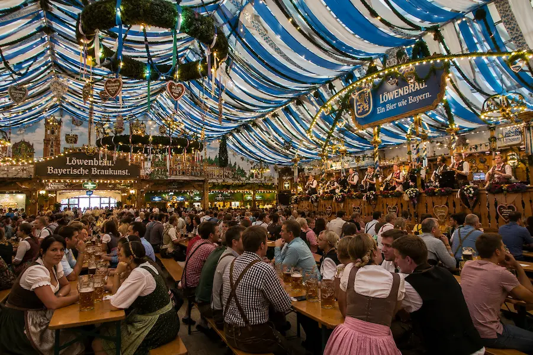
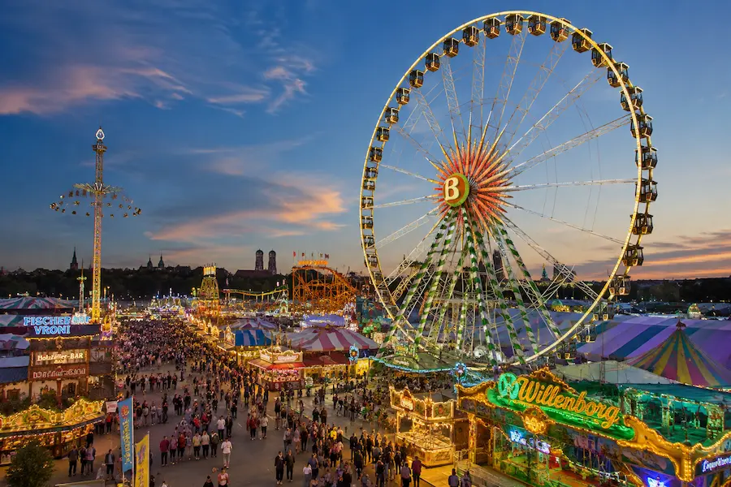
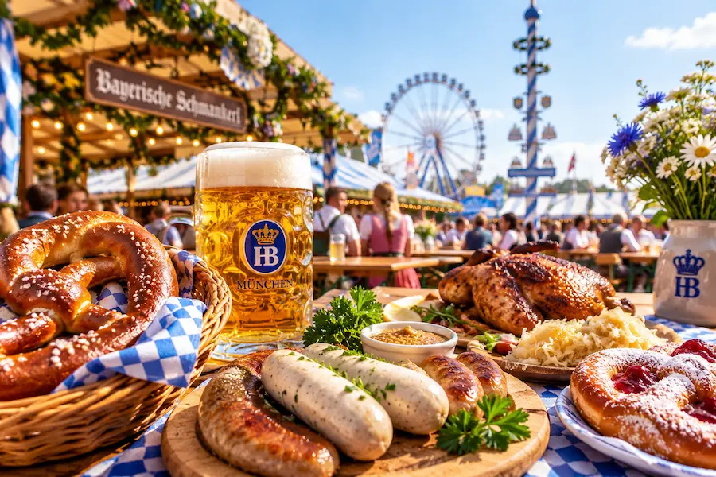
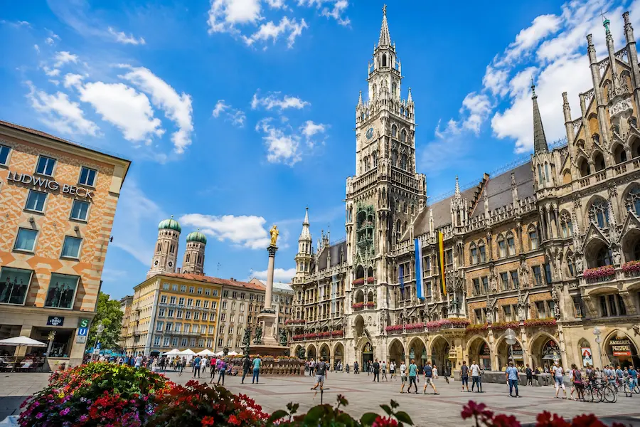

Munich · Bavière · Allemagne
Frühlingsfest Munich 2027
Découvrez les dates, le lieu, l'ambiance et les informations pratiques pour profiter du Frühlingsfest, la célèbre fête du printemps de Munich sur la Theresienwiese.
Le Frühlingsfest de Munich 2027, également appelé fête du printemps de Munich, est l'une des célébrations printanières les plus populaires de Bavière. Il est souvent surnommé le « petit Oktoberfest » de Munich.
Organisé sur la célèbre Theresienwiese, le festival réunit des chapiteaux à bière traditionnels, des spécialités bavaroises, des manèges, des attractions familiales et une ambiance locale particulièrement festive.
L'édition 2027 est prévue du 16 avril au 2 mai 2027. L'accès au site du festival est gratuit, tandis que les manèges, la nourriture et les boissons sont payants.
Tout ce qu'il faut savoir sur les dates et le lieu du Frühlingsfest, ainsi que sur les moyens de rejoindre la Theresienwiese.
Le Frühlingsfest se déroule sur trois week-ends. Le programme et les horaires de certains événements spéciaux peuvent encore être modifiés avant le festival.
Le festival se déroule sur la célèbre Theresienwiese de Munich, le même site qui accueille l'Oktoberfest chaque automne.
Métro : prenez les lignes U4 ou U5 jusqu'à Theresienwiese.
S-Bahn : descendez à Hackerbrücke, puis comptez environ 10 minutes de marche.
Alternative : prenez les lignes U3 ou U6 jusqu'à Goetheplatz, puis marchez environ 10 minutes.
💡 Les transports en commun sont généralement la solution la plus simple, en particulier les soirs et les week-ends très fréquentés.
🎟️ Munich City Card
Le Frühlingsfest est bien plus qu'une fête foraine : il fait partie intégrante des traditions festives de Munich et marque le début de la saison des grandes célébrations en plein air en Bavière.
La fête du printemps de Munich a été organisée pour la première fois sur la Theresienwiese en 1965.
Elle a été créée afin d'offrir aux forains et aux professionnels des fêtes foraines locales une première grande occasion de reprendre leur activité après les mois d'hiver plus calmes.
Le Frühlingsfest se déroule sur le même site que l'Oktoberfest et partage plusieurs de ses traditions, notamment le cortège des brasseries, la mise en perce cérémonielle du premier tonneau, les chapiteaux et la musique bavaroise.
La fête du printemps est cependant plus petite et offre généralement une ambiance plus détendue et davantage fréquentée par les habitants de Munich.
Les fanfares, chants traditionnels et danses bavaroises occupent une place importante dans le programme du festival.
Certains visiteurs portent un dirndl ou un lederhosen, notamment lors des festivités dans les chapiteaux, mais les vêtements traditionnels ne sont jamais obligatoires.
Du week-end d'ouverture traditionnel aux journées familiales, en passant par les feux d'artifice et les célébrations bavaroises, le Frühlingsfest propose plusieurs événements spéciaux pendant toute la durée du festival. Le site est généralement ouvert de 11 h à 23 h en semaine et de 10 h à 23 h le week-end. Certaines dates et certains horaires peuvent encore être modifiés avant avril 2027.
Week-end d'ouverture
Vendredi 16 avril : à partir d'environ 15 h, les brasseries et les forains effectuent traditionnellement leur cortège d'arrivée sur la Theresienwiese, suivi de la mise en perce officielle du premier tonneau vers 16 h.
Samedi 17 avril : le traditionnel marché aux puces de la Croix-Rouge bavaroise devrait débuter à partir de 7 h.
Dimanche 18 avril : des véhicules historiques et de collection se rassemblent traditionnellement près de la statue Bavaria pour une exposition publique et un défilé.
Journées des familles
Les deux mardis sont prévus comme journées spéciales pour les familles, traditionnellement organisées d'environ 12 h à 19 h.
Des tarifs réduits sont généralement proposés sur certains manèges, attractions et offres de restauration, ce qui en fait des journées particulièrement intéressantes pour les familles.
Soirées spéciales sur la Theresienwiese
Les feux d'artifice font partie des temps forts traditionnels du Frühlingsfest, avec généralement deux spectacles organisés pendant le festival.
Les dates et horaires précis des feux d'artifice 2027 pourront être confirmés à l'approche de l'événement.
Journée des traditions
Le dernier dimanche célèbre traditionnellement la culture bavaroise, avec des festivités prévues à partir d'environ 11 h.
Musique traditionnelle, groupes régionaux, costumes et danses offrent au festival une conclusion résolument bavaroise.
Quelques préparatifs peuvent rendre votre visite au Frühlingsfest de Munich plus agréable, en particulier les soirs, les week-ends et lors des journées spéciales du programme.
Les après-midi en semaine sont généralement plus calmes, tandis que les vendredis soir et les week-ends offrent une ambiance plus animée et attirent davantage de visiteurs.
Il est généralement possible d'entrer dans les chapiteaux sans réservation lorsque des places sont disponibles, mais réserver peut être utile pour les groupes et lors des soirées les plus fréquentées.
Avril et le début du mois de mai peuvent alterner journées douces, soirées fraîches et averses occasionnelles. Prévoyez une couche supplémentaire ainsi qu'une protection légère contre la pluie.
Vous pouvez privilégier les 20 ou 27 avril 2027, dates auxquelles certains manèges, attractions et offres de restauration devraient être proposés à tarif réduit.
Le paiement par carte peut être accepté à de nombreux endroits, mais conserver quelques euros en espèces reste pratique pour certains petits stands, manèges et achats rapides.
Les dirndls et lederhosen sont les bienvenus mais ne sont jamais obligatoires. Des chaussures confortables sont surtout recommandées, car vous pourrez passer plusieurs heures à marcher ou à rester debout.
Séjourner près de la Theresienwiese ou à proximité du réseau de transports en commun de Munich permet de profiter facilement du festival tout en découvrant la ville.
C'est le secteur le plus pratique pour les visiteurs qui souhaitent séjourner à quelques minutes à pied du site du festival.
Les hébergements proches de la Theresienwiese peuvent être très demandés pendant les grands événements, il est donc conseillé de réserver suffisamment tôt.
La gare centrale de Munich est un choix pratique pour les visiteurs arrivant en train ou souhaitant organiser des excursions à la journée en Bavière.
La Theresienwiese est accessible à pied ou rapidement en transports en commun, tandis que le centre historique reste à proximité.
Le centre historique de Munich est idéal pour les voyageurs qui souhaitent combiner le Frühlingsfest avec Marienplatz, les restaurants traditionnels, les musées et les boutiques.
Les hôtels de ce quartier sont généralement plus éloignés du site du festival, mais permettent d'accéder facilement aux principales attractions de Munich.
Recherchez un hébergement près de Theresienwiese pour les 16 et 17 avril 2027. Vous pourrez modifier les dates et le nombre de voyageurs directement sur le site de réservation.
🛏️ Comparer les hébergements sur Booking.com 🏨 Trouver un hôtel près du FrühlingsfestLe Frühlingsfest associe les traditions bavaroises à l'ambiance colorée d'une grande fête foraine et offre une alternative printanière plus détendue à l'Oktoberfest.

De grands chapiteaux accueillent les visiteurs autour de bières bavaroises, de spécialités régionales, de musique live et de l'ambiance conviviale qui caractérise les fêtes traditionnelles de Munich.
L'entrée dans les chapiteaux est généralement gratuite, mais réserver une table peut être utile pour les groupes ou lors des soirées et week-ends les plus fréquentés.
🍻 Prolongez l'expérience : découvrez les célèbres brasseries et halles à bière de Munich lors d'une visite guidée consacrée à la culture brassicole séculaire de la ville.
🍺 Découvrir la culture de la bière à Munich
La Theresienwiese se transforme en une grande fête foraine colorée avec des carrousels classiques, des attractions familiales, des jeux et des manèges à sensations.
La grande roue est l'une des attractions les plus reconnaissables du festival et offre une vue mémorable sur le site et sur Munich.
🎟️ Les billets peuvent être achetés directement auprès de l'attraction sur le site du festival.

Les visiteurs peuvent déguster les grands classiques des fêtes bavaroises, comme les bretzels, les saucisses, le poulet rôti, les douceurs et d'autres spécialités régionales.
Les stands de restauration et les chapiteaux proposent de quoi manger tout au long de la journée, pour le déjeuner, le dîner ou simplement pour prendre un verre en soirée.
🥨 Découvrez davantage la Bavière : prolongez votre découverte culinaire avec une expérience gastronomique traditionnelle à Munich.
🥨 Découvrir la cuisine bavaroise
Prolongez votre expérience du Frühlingsfest en découvrant le centre historique de Munich, de Marienplatz et la Frauenkirche à Odeonsplatz, la Residenz et l'animé Viktualienmarkt.
Une visite guidée à pied est une excellente façon de découvrir l'histoire, l'architecture et la culture locale de Munich tout en explorant certains des lieux les plus emblématiques de la ville.
🏛️ Découvrir la vieille ville de MunichProfitez de votre séjour au Frühlingsfest pour découvrir également le centre historique de Munich, ses monuments emblématiques, ses musées et la culture bavaroise.

Promenez-vous sur Marienplatz, détendez-vous dans le Jardin anglais, découvrez les quartiers historiques de Munich ou partez explorer les châteaux et les paysages de Bavière.
🏙️ Découvrir le guide de Munich 🎟️ Que faire à Munich ?Réponses rapides aux questions les plus fréquentes sur le Frühlingsfest de Munich 2027 : dates, accès, horaires, transports et réservations.
Le Frühlingsfest Munich 2027 est actuellement prévu du vendredi 16 avril au dimanche 2 mai 2027, sur trois week-ends.
Le Frühlingsfest se déroule sur la Theresienwiese, le même grand site qui accueille l'Oktoberfest.
Oui. L'accès au site du festival et aux chapiteaux est généralement gratuit. Les visiteurs paient séparément les manèges, les attractions, la nourriture et les boissons.
Les horaires annoncés sont de 11 h à 23 h du lundi au vendredi et de 10 h à 23 h les samedis et dimanches. Les chapiteaux servent généralement leurs dernières boissons vers 22 h 30.
Le trajet le plus simple consiste à prendre les lignes de métro U4 ou U5 jusqu'à Theresienwiese. Vous pouvez également emprunter le S-Bahn jusqu'à Hackerbrücke ou les lignes U3 et U6 jusqu'à Goetheplatz, puis marcher environ 10 minutes.
Aucune réservation n'est nécessaire pour accéder au Frühlingsfest. Réserver une table peut cependant être utile pour les groupes et les visiteurs souhaitant profiter des chapiteaux lors des soirées ou week-ends les plus fréquentés.
Oui. Le Frühlingsfest propose des manèges familiaux, des attractions traditionnelles, des jeux et des stands de restauration. Les journées des familles sont prévues les 20 et 27 avril 2027, avec traditionnellement des tarifs réduits sur certaines attractions et offres de restauration.
Les deux festivals se déroulent sur la Theresienwiese et proposent des chapiteaux à bière, de la cuisine bavaroise, de la musique et des manèges. Le Frühlingsfest a lieu au printemps, est plus petit que l'Oktoberfest et offre généralement une ambiance plus détendue et davantage locale.